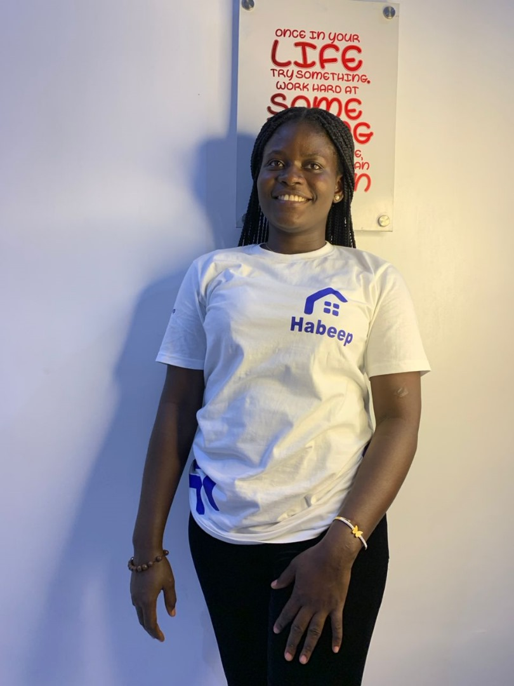

About Me
My name is Blessing Aniedi Asukwo and I go by Blackpride. I was born in Portharcourt and currently live in Calabar Nigeria. I am currently working as a UX/UI Desinger at 525 System. My hobbies include designing, cooking and traveling. I am looking forward to getting married and sealed in the holy Temple
Where I was born in Portharcourt Rivers State
Nigeria is rich in culture with over 250 ethnic groups, each with unique traditions. The country is known for vibrant festivals, music, and dance. Nigerian food is diverse and flavorful, often featuring ingredients like yams, rice, plantains, and various spices. Popular dishes include jollof rice, pounded yam with egusi soup, and suya (spicy grilled meat). Meals are often shared in communal settings, reflecting the importance of family and community. Traditional attire, such as the colorful Ankara fabric, is commonly worn during celebrations and everyday life.